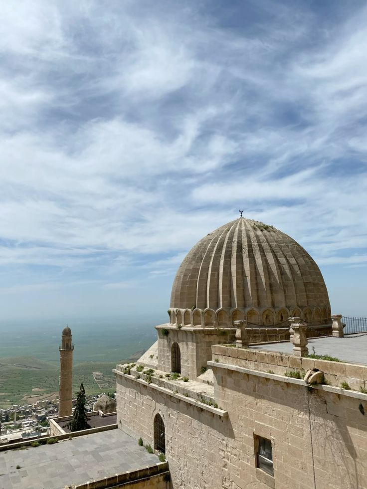
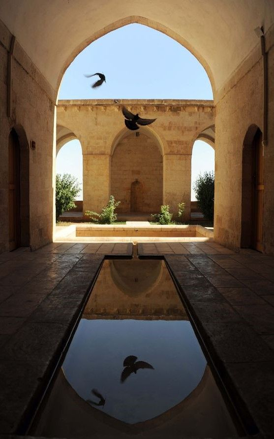
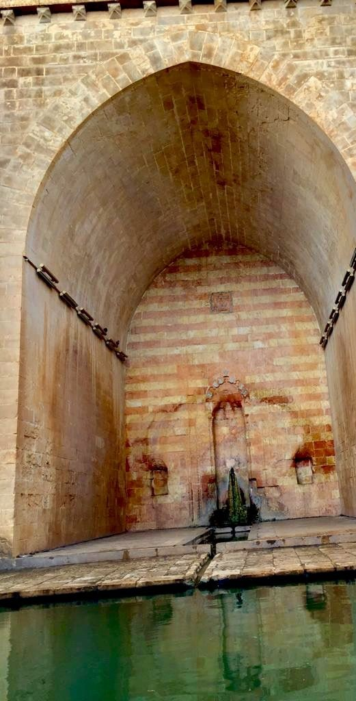

Mardin'in güneybatısında, Mezopotamya ovasına hakim bir tepede yer alan Kasımiye Medresesi, Artuklular döneminde yapımına başlanmış ancak Timur'un saldırıları nedeniyle yarım kalmıştır. Eser, 15. yüzyılın sonlarında Akkoyunlu Sultanı Kasım İbn Cihangir döneminde tamamlanmıştır.
Sarı kalker taşından inşa edilen bu muazzam yapı, sadece bir eğitim yuvası değil; aynı zamanda astronomi, tıp ve dini ilimlerin bir arada okutulduğu dönemin en önemli bilim merkezlerinden biri olmuştur.

Medresenin Mezopotamya Ovası'na bakan dış cephesi.
Taştaki Şiir ve Suyun Felsefesi

Hayatın Suya Yansıması
Medresenin en çarpıcı özelliği avlusundaki havuzdur. Duvardan doğan su (doğum), ince bir oluktan geçerek küçük bir havuza dökülür (çocukluk ve gençlik). Oradan büyük havuza geçer (yetişkinlik ve yaşlılık) ve en sonunda dar bir kanalla Mezopotamya ovasına doğru toprağa karışır (ölüm ve ahiret).
"Burada suyun akışı, insan ömrünün kısacık serüvenini sessizce öğrencilere fısıldar."

Kanlı Duvarın Sırrı
Rivayete göre Akkoyunlu Hükümdarı Kasım Bey, bu medresenin avlusunda suikasta uğramıştır. Kız kardeşi, abisinin acısıyla kanlı gömleğini medresenin duvarlarına sürmüştür. Günümüzde bile duvara su döküldüğünde o paslı kızıl izlerin ortaya çıktığı söylenir. Bu efsane, esere dramatik ve gizemli bir hava katar.